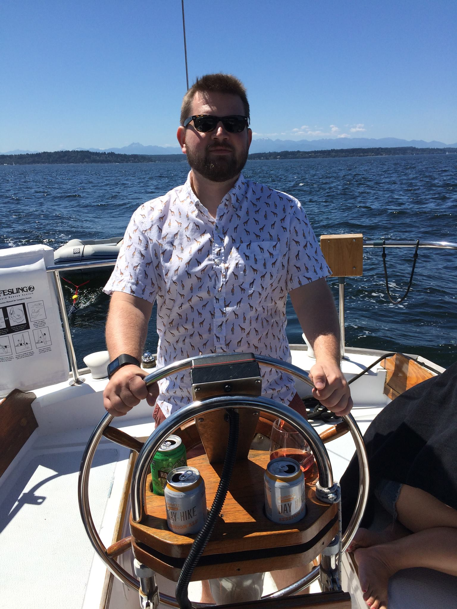

About Me

I grew up in Palatine, IL and moved to Phoenix, AZ in 2006. I have 2 dogs, a 1 year old Boston Terrier named Arthur and 5 month old Cairn Terrier mix named George. When I'm not writing descriptions of myself, I work as a Senior Information Consultant for Aetna. In my spare time I like to spend time with my dogs, play trivia and travel. Most recently I traveled to Panama where I was able to take a boat tour down the Panama Canal. I hope to find an awesome web development job with my new found skills from this class.
Connect with me